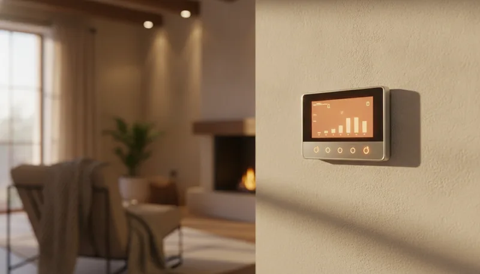
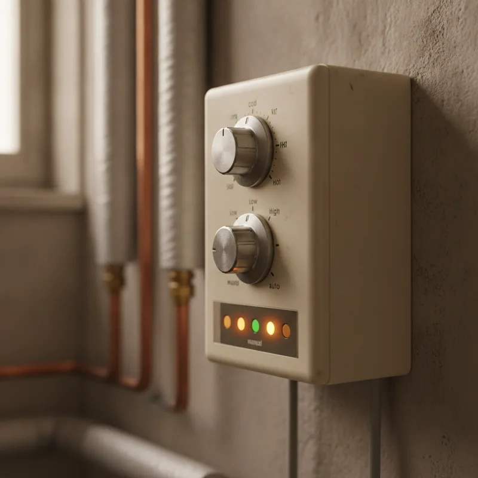

겨울철 보일러를 온종일 틀어도 가스비 부담을 줄이려면 외출 버튼을 습관적으로 누르는 동작부터 멈춰야 합니다. 개별난방은 외출 시 설정 온도를 2–3도 낮추는 조절이 유리하며, 지역난방은 전원을 끄지 않고 일정한 온도를 지속 유지하는 것이 에너지 소모를 줄이는 지름길입니다.

겨울철 외출할 때 보일러의 외출 버튼을 누르고 나가는 가구가 많습니다. 하지만 대다수 가스보일러의 외출 모드는 실내 온도가 5도에서 8도 이하로 떨어질 때 동파를 막기 위해 최소한으로 작동하도록 설계된 기능입니다.
외출 모드를 켜둔 상태로 외출 후 돌아와 다시 온도를 높이면 식어버린 바닥 배관과 난방수를 다시 데우기 위해 보일러가 최고 화력으로 장시간 가동됩니다. 이 과정에서 소비되는 가스량이 평소 온도를 유지할 때보다 훨씬 많습니다. 출근이나 장보기처럼 8시간 이내로 집을 비울 때는 외출 모드 대신 현재 설정 온도에서 2도에서 3도 정도만 낮춰두는 편이 난방비를 아끼는 데 훨씬 효과적입니다. 며칠 이상 집을 비우는 장기 부재 시에만 외출 모드를 활용하는 것이 바람직합니다.
여기서 차이가 벌어집니다.
집의 난방 공급 방식에 따라 온도를 조절하는 원리가 완전히 다릅니다. 개별난방은 집안에 설치된 보일러가 직접 가스를 태워 난방수를 데우는 구조입니다. 반면 지역난방은 대규모 발전소에서 공급받는 따뜻한 물을 집안 밸브로 조절해 순환시키는 방식입니다.
지역난방을 사용하는 집에서 전원을 아예 끄거나 온도를 크게 낮추면 차가워진 배관을 다시 데우는 데 수시간이 걸리고 난방수가 과도하게 유입되어 요금이 급증합니다. 따라서 지역난방 환경에서는 겨울철 내내 적정 온도(20–22도)를 일정하게 유지하는 연속 난방이 필수적입니다.
또한 지역난방 계량기 종류인 유량계(m³ 단위)와 열량계(MWh 단위)에 따라서도 대응이 달라집니다. 유량계는 들어오는 물의 양만 측정하므로 타이머 기능을 활용해 주기적으로 온수 입력을 끊어주는 것이 좋고, 열량계는 온도 차이까지 계산하므로 온도를 고정해 두는 편이 유리합니다.
| 구분 | 개별난방 (도시가스 보일러) | 지역난방 (유량계/열량계) |
|---|---|---|
| 짧은 외출 (8시간 이내) | 평소 온도보다 2–3도 낮춤 | 현재 온도 그대로 유지 (1도 이내 조절) |
| 장기 부재 (3일 이상) | 외출 모드 설정 | 16–18도 저온 고정 또는 외출 설정 |
| 온수 온도 설정 | 50도 내외 (고온 설정 지양) | 공급 밸브 미세 조절로 온수 공급 |
| 밸브 관리 | 안 쓰는 방 밸브 70% 이상 잠금 | 안 쓰는 방 밸브도 살짝 열어 순환 유지 |
| 난방비 핵심 전략 | 빠른 열효율 축적 및 단열 | 연속 난방을 통한 유량 급증 방지 |
각 난방 방식의 작동 원리를 이해하지 않은 채 남들의 설정법을 그대로 따라 하면 오히려 요금 폭탄을 맞기 쉽습니다.
난방비에 영향을 미치는 또 다른 요소는 온수 온도와 실내 습도입니다. 보일러의 온수 온도를 최고 단계인 60도 이상으로 설정해 두면 물을 데우는 동안 보일러가 최대 가동되어 가스 소모가 가파르게 증가합니다. 실제 사람이 샤워할 때 쓰는 물 온도는 38도에서 42도 사이이므로 온수 온도를 50도 내외로 설정하고 샤워하는 편이 에너지 낭비를 막아줍니다.
보일러를 틀 때 가습기를 함께 가동하는 습관도 중요합니다. 공기 중 수분량이 늘어나면 실내 열 전달 속도가 빨라지고 바닥의 온기가 더 오랫동안 유지됩니다. 바닥에 두꺼운 러그나 매트를 깔아두는 것만으로도 열 손실을 3도 이상 줄이는 효과가 납니다.
이게 핵심입니다.

보일러 설정 변경 전후로 아래 순서에 따라 집안 상태를 확인하면 열 손실을 막고 난방 효율을 안정적으로 끌어올릴 수 있습니다.
체크리스트 항목을 하나씩 이행하면 보일러 가동 시간을 직접적으로 단축하는 결과를 가져옵니다. 이미 기본적인 보일러 조작 방법을 익혔다면 실생활에 바로 적용해 보기 바랍니다. 추가로 관련 가이드인 겨울철 난방비 절약 위한 도시가스 캐시백 신청과 보일러 설정법을 함께 참고하면 세부적인 요금 절감 팁을 파악하는 데 도움이 됩니다.
보일러 설정 변경 외에도 국가에서 제공하는 난방비 지원 제도를 적극 활용할 필요가 있습니다. 매년 동절기(12월부터 익년 3월까지)에는 도시가스 사용량을 전년 대비 3% 이상 줄였을 때 절감된 가스량만큼 현금으로 돌려주는 도시가스 절약 캐시백 제도가 시행됩니다.
한국가스공사 도시가스 절약 캐시백 공식 홈페이지를 통해 주택난방용 도시가스 사용자라면 누구나 신청할 수 있습니다. 절감율에 따라 ㎥당 현금 환급 혜택이 지급되므로 겨울이 시작되기 전 미리 회원가입과 신청을 마쳐두는 편이 유리합니다.
에너지 효율 향상 및 관련 공공 지원 사업 현황은 한국에너지공단 사이트에서도 자세히 확인할 수 있습니다. 다만 매년 신청 일정 및 세부 환급 단가가 개편될 수 있으므로 이용 전 최신 공고를 반드시 다시 확인해야 합니다.
원리는 간단합니다.
외출 모드는 바닥 난방수를 최소한으로만 순환시켜 영하의 날씨에 보일러 배관이 터지는 것을 막는 데 주 목적이 있습니다. 3일 이상 집을 비울 때는 유용하지만 며칠 동안 집을 비우지 않는 일상적인 외출 시에는 실내 온도가 너무 낮아져 복구 시 가스가 더 많이 소모됩니다.
개별난방의 경우 쓰지 않는 방의 밸브를 완전히 잠그면 난방수 순환 면적이 줄어들어 난방비를 아낄 수 있습니다. 단, 분배기 밸브를 완전히 차단하기보다 70% 정도만 잠가 두거나 2개 이상의 방을 동시에 열어두어야 배관 수압 균형이 유지됩니다. 지역난방은 방 밸브를 완전히 잠그면 유량 변화로 다른 방의 난방 효율이 떨어질 수 있어 살짝 열어두는 방식을 권합니다.
겨울철 실내 적정 온도는 18도에서 20도 사이입니다. 실내 온도를 1도 낮출 때마다 전체 난방 에너지 소비량이 약 7% 절감되는 것으로 알려져 있습니다. 내복이나 수면양말을 착용해 체감온도를 높이면서 난방온도를 1–2도 낮추는 조작이 난방비 절약에 매우 유효합니다.
| 슬롯 | 위치 | 기준 블록 | 근거 |
|---|---|---|---|
🖼 이미지 1 news-20261118-9qxt-01-intro.webp | 문단 1 뒤 | P · 겨울철 보일러를 온종일 틀어도 가스비 부담을 줄이려면 외출 버튼을 습관적 | 도입부 첫 문단 뒤(히어로) |
| 📢 광고 1 | 문단 6 앞 | H2 · 개별난방과 지역난방의 맞춤형 설정 비교 | H2 앞 · 직전 광고와 — 간격 |
🖼 이미지 2 news-20261118-9qxt-02-middle.webp | 문단 16 앞 | H2 · 겨울철 난방비 절약을 위한 4단계 체크리스트 | 글자수 기준 중간에 가장 가까운 소제목 앞 |
| 📢 광고 2 | 문단 20 앞 | H2 · 도시가스 절약 캐시백 및 공공지원 활용 방법 | H2 앞 · 직전 광고와 1219자 간격 |
🖼 이미지 3 news-20261118-9qxt-03-end.webp | 문단 30 앞 | P · 겨울철 실내 적정 온도는 18도에서 20도 사이입니다. 실내 온도를 1도 | 마지막 문단 앞(마무리) |